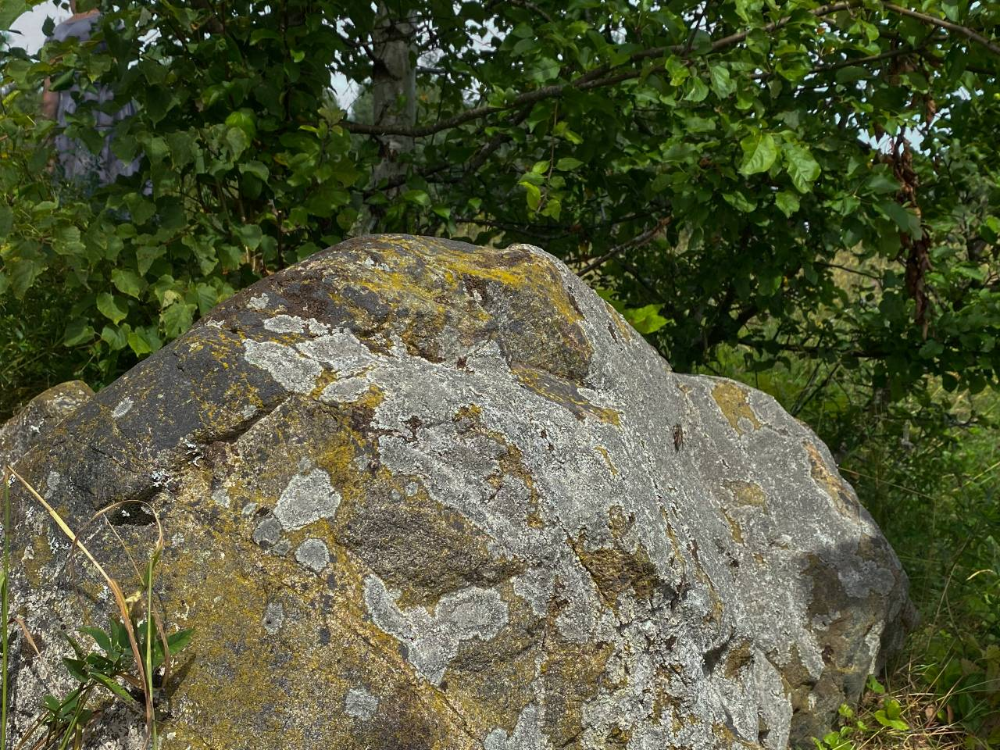
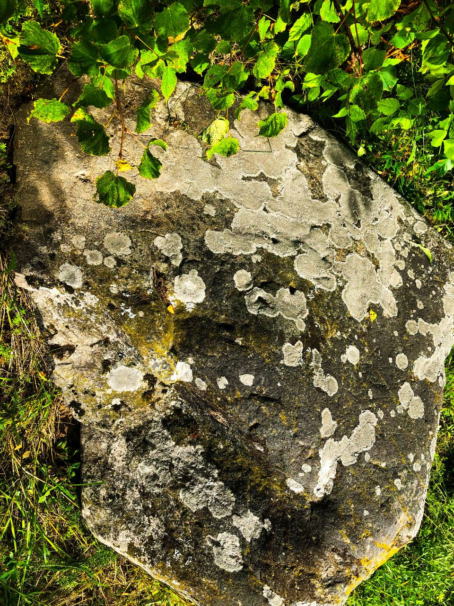
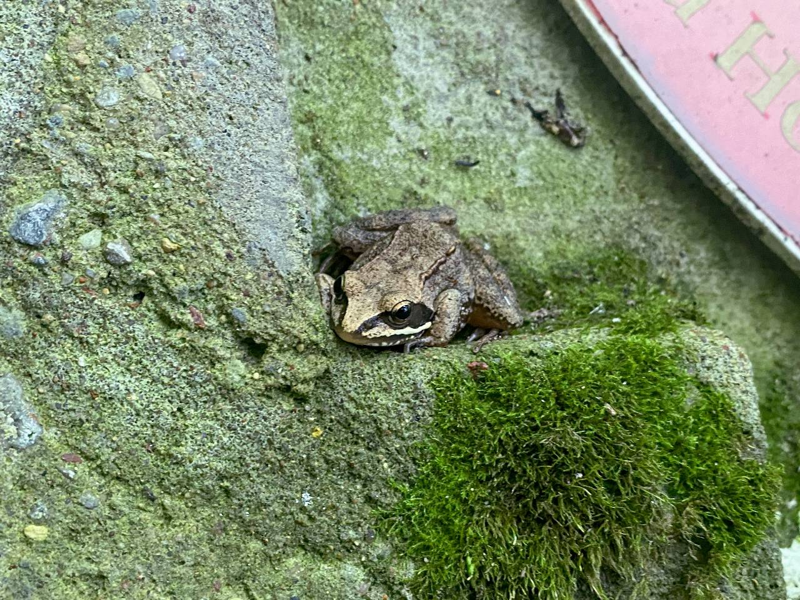
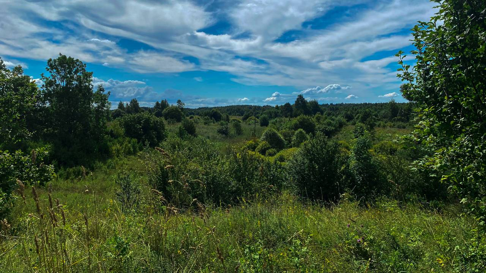
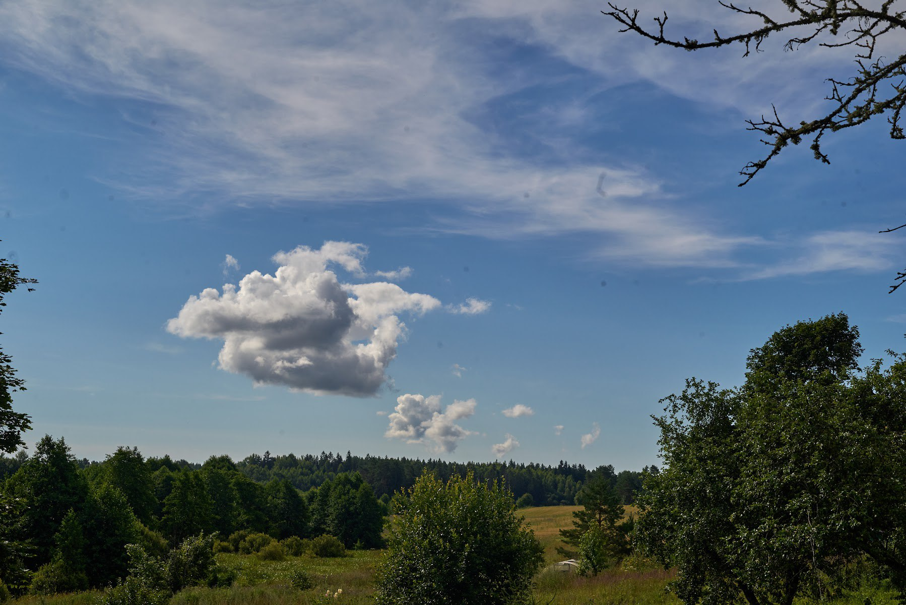
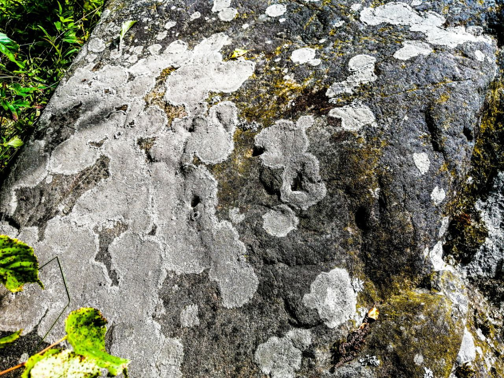
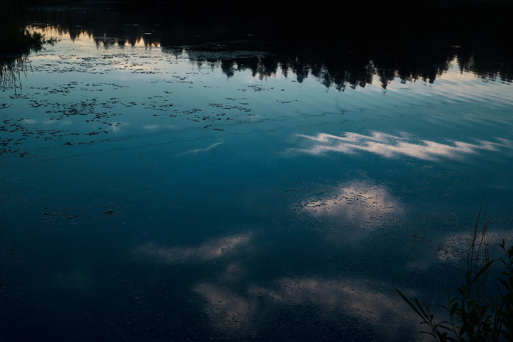

Чаму людзі вераць, што буслы прыносяць дзяцей? Адказ хаваецца ў гісторыі ўзгорка Буцянок.
У вёсцы Гурніца на Сарачанскім возеры каля дарогі знаходзіцца маляўнічы ўзгорак з вялізным каменем. Гэта старажытнае капішча паганскага бога Ярылы. Тут сустракалі вясну і ўсе святы вясенне-летняга цыклу: Гуканне вясны, Купалле і г. д. Спявалі, вадзілі карагоды і скакалі праз вогнішчы. Хлопцы і дзяўчаты сустракалі першае каханне.
Другая назва ўзгорка "Магіла рыцара", а яшчэ больш старажытная "Буцянок". Буцянамі называлі ў гэтых краях буслоў, якіх і зараз вакол вялікае мноства. А назва "Магіла рыцара" звязана з Ярылам - богам вясны, урадлівасці, кахання і вайны. Яго часта малявалі верхам на кані. Хрысціянскім пераемнікам Ярылы стаў Святы Юры. Рыцар на гербе ВКЛ "Пагоня" таксама ўзыходзіць да выявы Ярылы.
На капішчы ляжыць вялізны валун, спярэшчаны малюнкамі і знакамі. Многія схаваны пад лішайнікам, а некаторыя бачныя даволі добра.
  
На думку мясцовага краязнаўцы Алеся Гарбуля, гэты камень выкарыстоўваўся язычніцкімі святарамі для варажбы і прадказання будучыні. Літоўскі гісторык Вітаўтас Вайткявічус вызначыў, што тры паглыбленні на ім былі зроблены нейкім жалезным прадметам. Таксама на гэтым камені ёсць крыжы, салярныя знакі і малюнкі, падобныя да знакаў рун. Па адной з версій у спецыяльныя адтуліны ставіліся 3 палкі і на іх змяшчаўся посуд, у які залівалі вадкасць: ваду або кроў ахвярных жывёл. Вадкасць пералівалася праз краі пасудзіны і пападала на знакі. І па гэтых знаках паганскія святары прадказвалі будучыню: на якія знакі трапляла вадкасць, такая будучыня і чакалася.
З гэтым узгоркам звязаны дзве легенды.
Дачка чорнага знахара
Некалі вельмі даўно ў гэтай вёсцы жыў чорны знахар. Чаму чорны? Справа ў тым, што існавалі белыя знахары, якія тварылі дабро з дапамогай магіі. Але былі і чорныя, якія шкодзілі людзям.
У чорнага знахара была маладая дачка. Яна закахалася ў беднага юнака-сірату. Знахару не спадабалася, што мужам яго цудоўнай дачкі можа стаць нейкі жабрак.
Даведаўшыся аб іх сустрэчы, ён падсыпаў у напой дачкі соннага зелля. Калі дзяўчына заснула, бацька сам прыйшоў на ўзгорак і сустрэўся з яе каханым. І яго таксама пачаставаў квасам з сонным зеллем. Ён расказаў хлопцу, што яго дачка заснула на пару хвілін і папрасіла пачакаць яе, а ён прынёс яму папіць.
Хлопец выпіў напой і заснуў. А зіма была тады халодная. На наступны дзень юнака знайшлі там жа на ўзгорку, змёрзлым да смерці. Там жа яго і пахавалі.
А каханая яго прачнулася толькі праз тры дні. І калі даведалася пра трагедыю, людзі гавораць, цэлых 40 дзён ліла слёзы на магіле каханага. А на 41 дзень там здарыўся цуд: праз слёзы дзяўчыны на тым узгорку сярод снега заквітнела трава і першацветы. І на магіле хлопца стаяў бусел, трымаючы ў сваёй дзюбе немаўля. Дзяўчына знікла. Людзі ўсынавілі дзіця, а ўзгорак назвалі Буцянок, бо ў старажытныя часы бусла на Беларусі таксама называлі "буцян".
 
Цень князя
Другая легенда распавядае аб тым, што пасярод Сарачанскага возера раней быў востраў, на востраве ў замку жыў князь. Яго дачка пакахала простага рыцара. Бацька пра гэта не ведаў, а калі вярнуўся з далёкага паходу, яму народ паведаміў аб каханні дачкі да простага рыцара. Князь даў загад схапіць юнака і пабіць палкамі, засекчы да смерці.
Дачка не дазволіла гэтаму адбыцца. Тады бацька загадаў звязаць і закапаць закаханую пару жыўцом. Пасля злачынства князь выгнаў чэлядзь з замка і замкнуўся там на 3 дні. Раптам людзі ўбачылі, што замак загарэўся. І ад клубаў дыму аддзяліўся вялізны цень пераплыў возера і знік. Па легендзе гэта быў цень князя. А ведаючы аб яго злачынстве, ніхто нават не кінуўся тушыць пажар.
Кажуць, што да гэтага часу прывід князя ходзіць у поўню вакол возера і шукае закаханых. Сцвярджаюць, што з тымі, хто бачыць прывіда, здараюцца няшчасныя выпадкі.
Таму калі вы захочаце наведаць гэтае месца, сачыце, каб у гэты дзень не было поўні!
 
Легенды запісалі Раман Неведомскі і Алекс Працкевіч.